カウンセリング・検査
お悩みと身体の状態を丁寧に確認
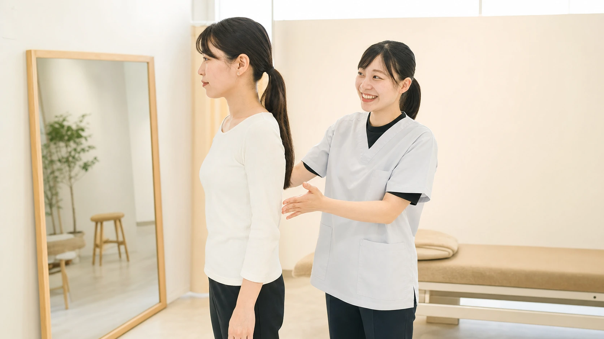
気になる症状やご希望を伺い、姿勢や身体の動きを確認します。原因や施術方針も、わかりやすくご説明します。
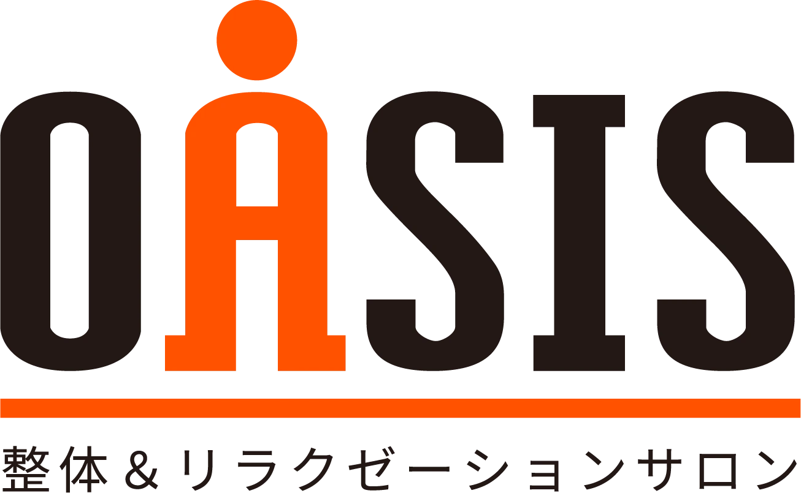
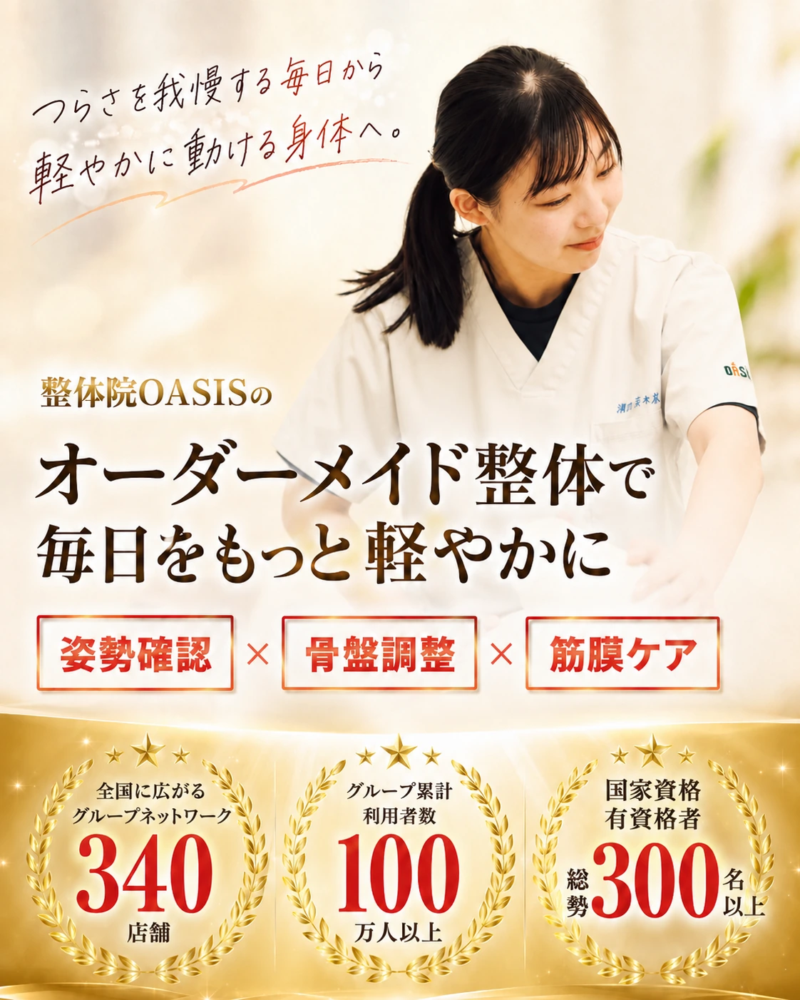
自分の身体に合う整体で
心地よい毎日を過ごそう。
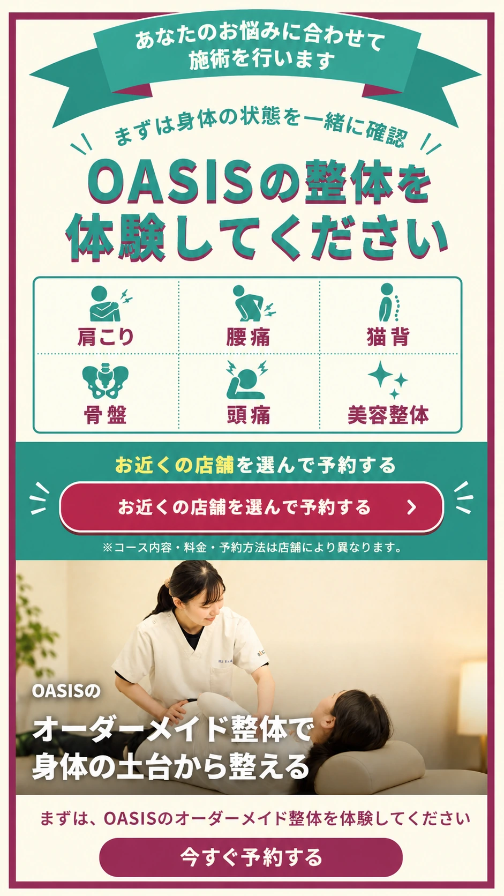
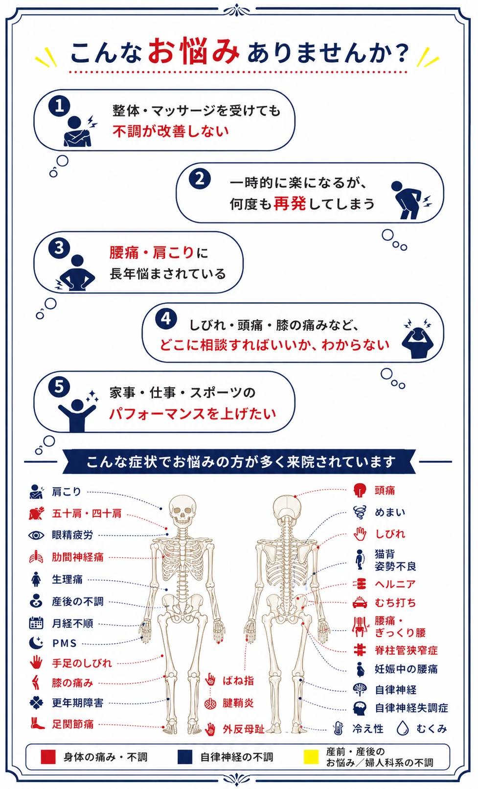
OASISのオーダーメイド整体なら
お悩みと身体の状態を丁寧に確認

気になる症状やご希望を伺い、姿勢や身体の動きを確認します。原因や施術方針も、わかりやすくご説明します。
筋肉と筋膜をゆるめて動きやすく
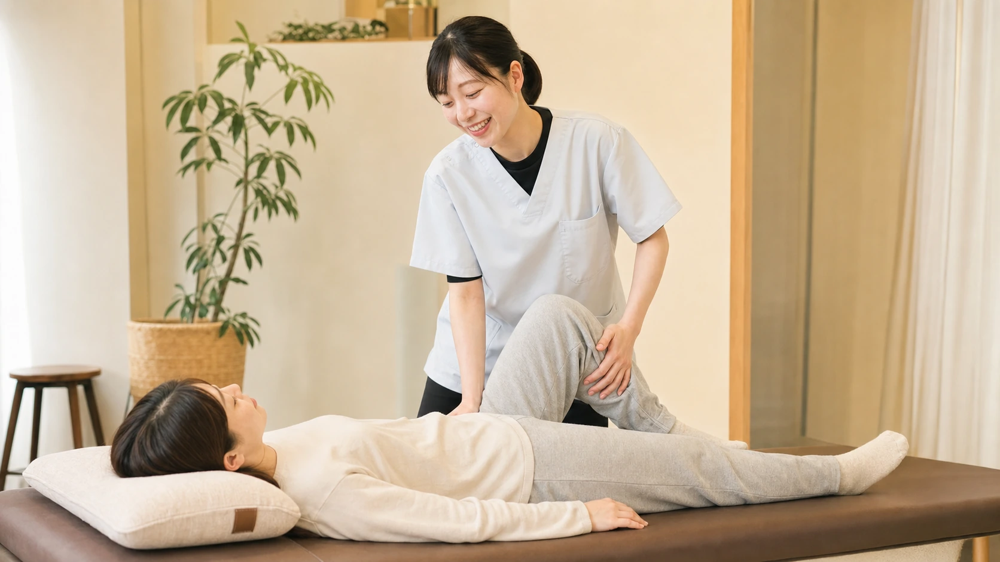
全身を丁寧にほぐし、ストレッチと筋膜リリースを組み合わせて、筋肉と関節を動きやすい状態へ導きます。
無理のない方法で骨格バランスを調整
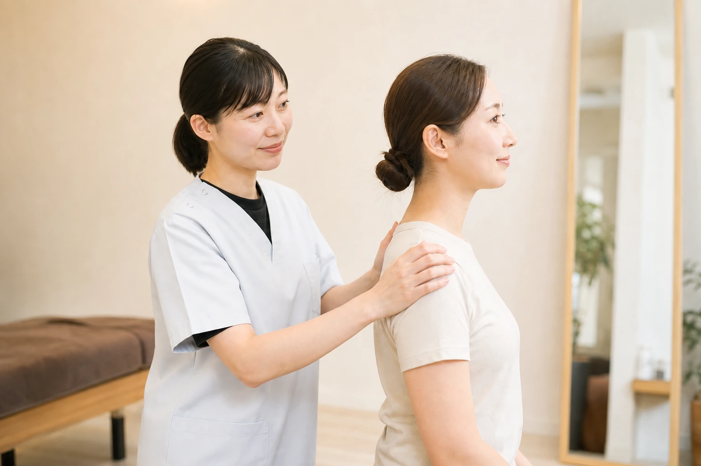
不調や姿勢の崩れにつながる骨格を、一人ひとりに合う方法で調整します。強い刺激が苦手な方もご相談ください。
変化を確認し、日常のケアまでご案内
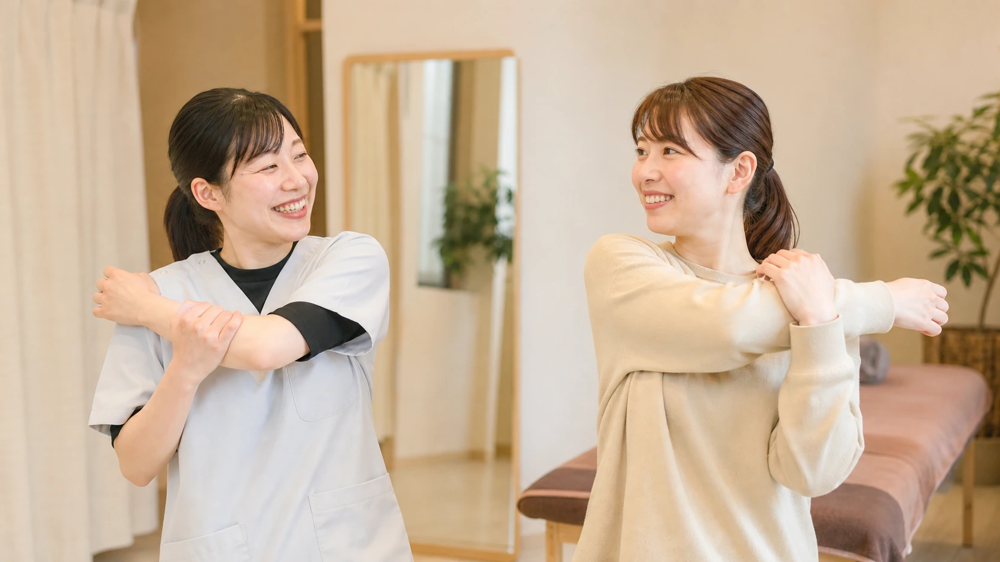
施術前後の身体の変化を一緒に確認し、良い状態を保つための生活習慣やセルフケアをお伝えします。
表面的な症状だけでなく
その奥にある原因を考え
身体に合う施術をご提案します
整体が初めての方もご相談ください
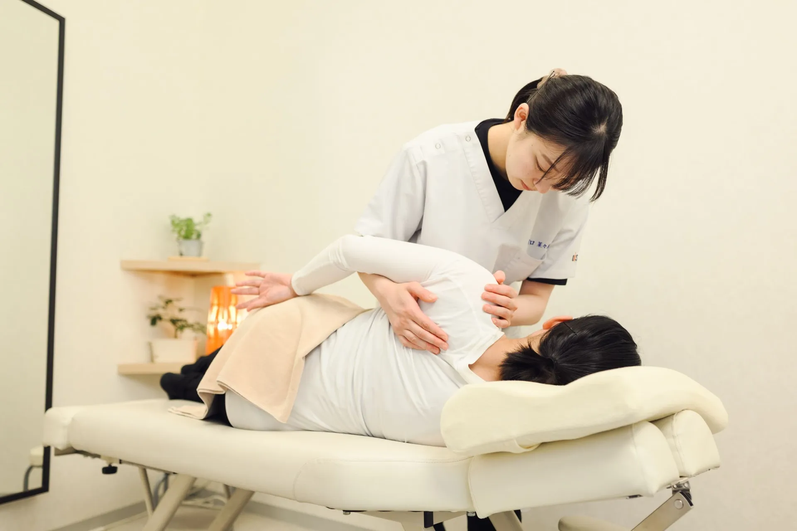
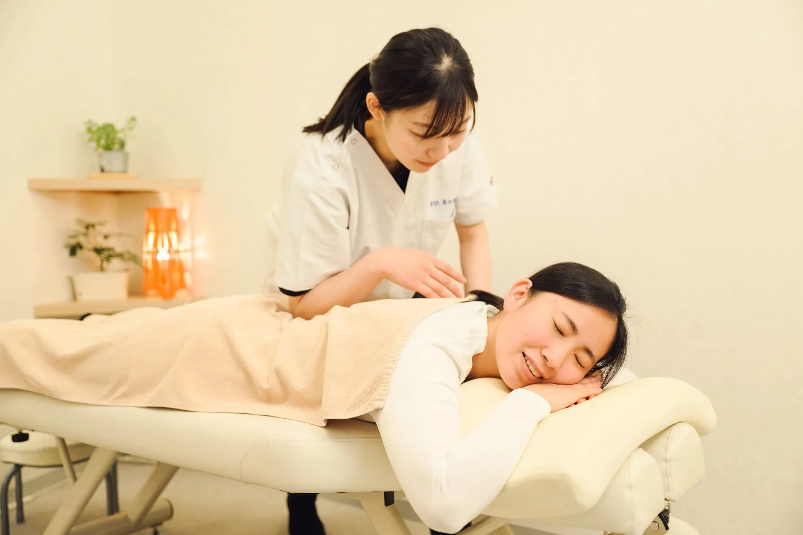
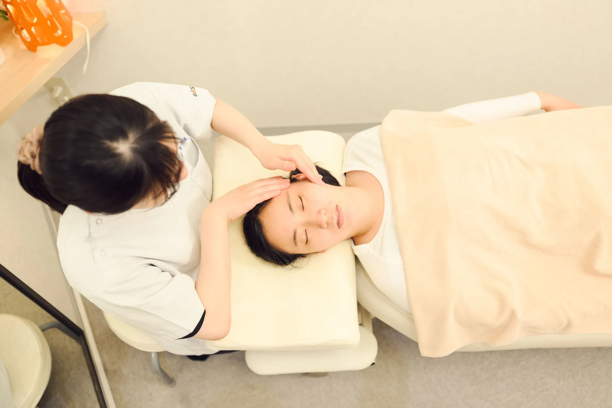
※メニューの詳細・取扱コース・料金は店舗によって異なります。
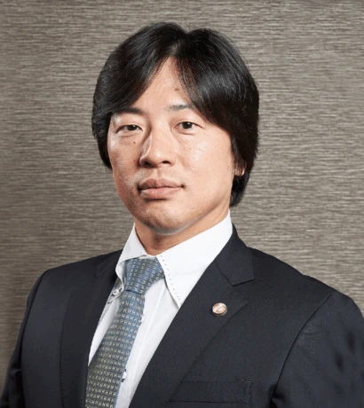
医師（日本医師会認定産業医）
鈴木孝昭先生
豊富な知識と確かな技術を備え、一人ひとりの身体の状態に合わせて丁寧に向き合ってくれる、信頼のおける整体院です。初めての方でも安心して相談できるため、ぜひおすすめいたします。
1 / 7
その場だけではなく、これからの毎日まで考えた整体を。
気になる症状や生活習慣を伺い、姿勢や関節の動きまで確認。施術方針をわかりやすくお伝えします。
骨盤や背骨、関節の動き、全身の筋膜のつながりを確認し、今の身体に合う施術を組み立てます。
ボキボキする施術が不安な方もご相談ください。年齢や身体の状態に合わせて無理のない方法を選びます。
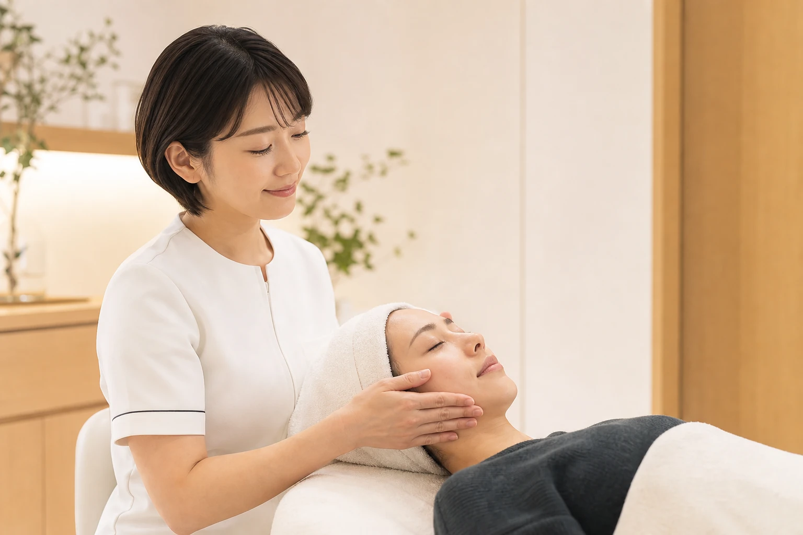
整体や筋膜ケアをはじめ、足つぼ、ヘッドケア、美容整体など、目的に合わせたメニューをご用意しています。
お買い物やお仕事帰りにも立ち寄りやすい環境です。営業時間や定休日は店舗ごとにご確認いただけます。
ご来院からお帰りまで、身体の状態に寄り添って進めます。
ご希望の店舗を選び、店舗ページからご予約ください。
お悩みを伺い、姿勢や身体の動きを確認します。
全身を丁寧にほぐし、動きやすい状態へ導きます。
身体に無理のない方法で骨格のバランスを整えます。
施術前後を確認し、日常でできる身体の使い方をお伝えします。
ご予約は各店舗ページから承っております
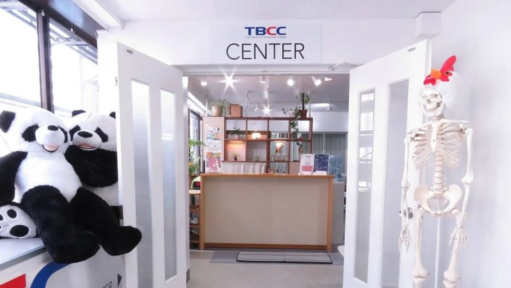
〒810-0001 福岡市中央区天神3-1-16 橋口ビル4階
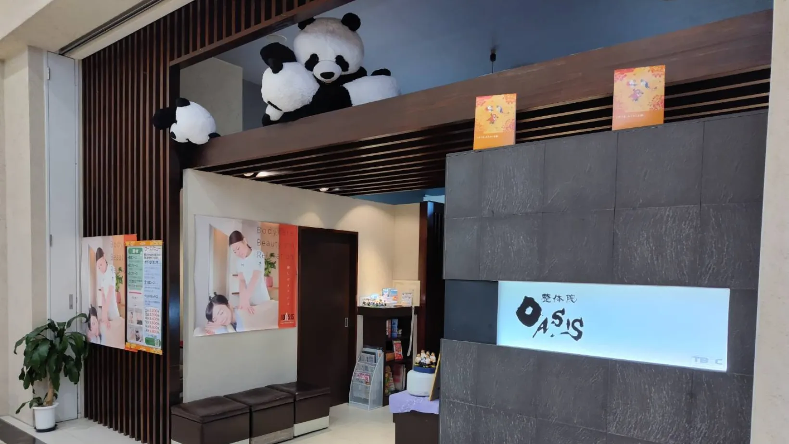
〒822-0008 福岡県直方市湯野原2-1-1 イオンモール直方1F
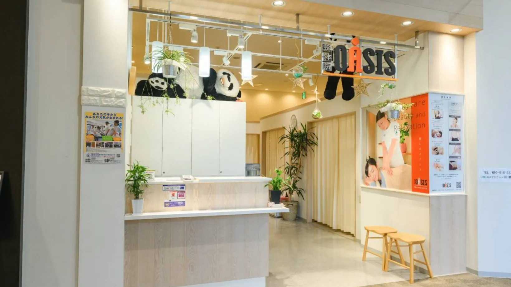
〒818-0042 福岡県筑紫野市立明寺434-1 イオンモール筑紫野2階
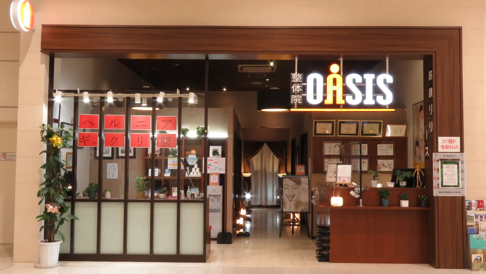
〒811-3209 福岡県福津市日蒔野6-16-1 イオンモール福津1F
A身体の状態と施術内容をご説明してから進めます。不安なことは遠慮なくお伝えください。
A動きやすい服装がおすすめです。お着替えの用意については各店舗へご確認ください。
Aお子様連れも歓迎しています。設備や対応は店舗により異なるため、ご予約前にご確認ください。
Aお悩みや目的を伺い、身体の状態に合わせてご提案します。迷っている場合もご相談ください。
A身体の軽さや動きやすさを感じる方が多いです。違和感が続く場合は店舗へご相談ください。
A身体を整え、毎日を快適に過ごすためのケアとしてご利用いただけます。
A身体の状態や目的によって異なります。確認後、無理のない通院目安をご案内します。
身体のことをひとりで我慢せず